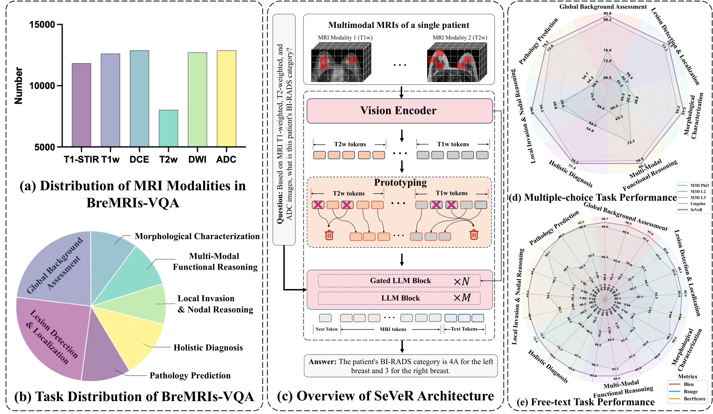

Figure 1 : Comparison of three paradigms for VLA-based robot manipulation. (a) Single-frame VLA: Only the current observation is processed, lacking historical context and limiting ...
Anna Niemelä, Daniel Jordan, Aaro Järvinen, Amanda Bruncrona, Adam Kit, Lorenzo Frassinetti, David Hatch, Leonhard Leppin, Samuli Saarelma, MAST Upgrade team, EUROfusion Tokamak Exploitation team
Figure 1: Workflow used to generate the training dataset for the surrogate model. Pedestal parameters are sampled within experimentally constrained bounds derived from a reference ...
Figure 14: Comparison of sample trajectories of Example 4.5 in phase space with initial condition ( 500 , 1000 , 2000 ) (500,1000,2000) and parameter c 1 Y ¯ 1 = 2 c_{1}\overline...
Figure 2 : Framework of ACF-Net. OFGM enhances RGB frames with optical-flow-guided motion cues, while ACAF adaptively fuses multimodal features for final classification.
Figure 1 : Overview of TacForcing . The VLM encodes the visual observation and language instruction once, and the resulting task context is reused throughout streaming generation. ...
Figure 8: System Overview. (A) A hierarchical adaptation framework that integrates adaptive sensor fusion with a learning-based IMU odometry. The sensor fusion module provides free...
Figure 4: Task performance of layer-wise experiments on LLaVA-1.5-7B across MME and POPE under different settings of visual head numbers. Each layer in the LLM backbone is treated ...
Figure 3: Importance score components across 128 frames of a representative video. From top to bottom: gradient-direction shift G t G_{t} , alignment-loss delta R t R_{t} , and com...
如何仅向解码器暴露有边际价值的多模态多层证据？
对当前主题的关键意义在于：把诊断通道/图像 ROI 压成原型，以破裂查询逐步取回，比较全量融合、Top-k 和边际效用检索的 AUC、提前量、token 数、显存和延迟。
方法与关键创新

Figure 1 : Overview of the BreMRIs-VQA benchmark and the proposed SeVeR. (a–b) BreMRIs-VQA contains 6 MRI modalities and 7 categories of clinical tasks derived from 1.19M QA pairs....
![Figure 1 : Comparison of three paradigms for VLA-based robot manipulation. (a) Single-frame VLA: Only the current observation is processed, lacking historical context and limiting temporal memory and spatial perception. (b) Window-based VLA: A window of K K frames is processed simultaneously, enriching temporal context at the cost of high computational overhead. (c) Streaming-based VLA (Ours): The model queries cached Key&Value representations from previous timesteps via a lightweight KV cache, achieving temporal memory and precise spatial perception.](../assets/figures/c96b5d2c44b9439a.png)
![Figure 1: Workflow used to generate the training dataset for the surrogate model. Pedestal parameters are sampled within experimentally constrained bounds derived from a reference MAST-U discharge, and used to construct smooth temperature and density profiles via an m m -tanh parameterisation. These profiles are input to the HELENA equilibrium solver to compute self-consistent pedestal equilibria, which are then used to define local flux surfaces within the pedestal region. At each selected radial location, linear gyrokinetic simulations are performed using GENE over a range of ion-scale binormal wavenumbers, producing growth rates, mode frequencies, and transport quantities that form the machine-learning training dataset.](../assets/figures/0c0040954d745b57.png)
![Figure 1 : Overview of TacForcing . The VLM encodes the visual observation and language instruction once, and the resulting task context is reused throughout streaming generation. The Streaming Action Expert progressively refines action blocks according to block-specific flow times, allowing successive blocks to become ready for sequential execution. After each ready block is executed, the resulting tactile feedback is encoded before generation resumes from the retained intermediate states of unfinished blocks. Execution-Aware Tactile Attention allows the latest tactile feedback to condition only the block scheduled for execution next, thereby reducing the temporal mismatch between tactile acquisition and action execution.](../assets/figures/1912401a74f8208b.png)